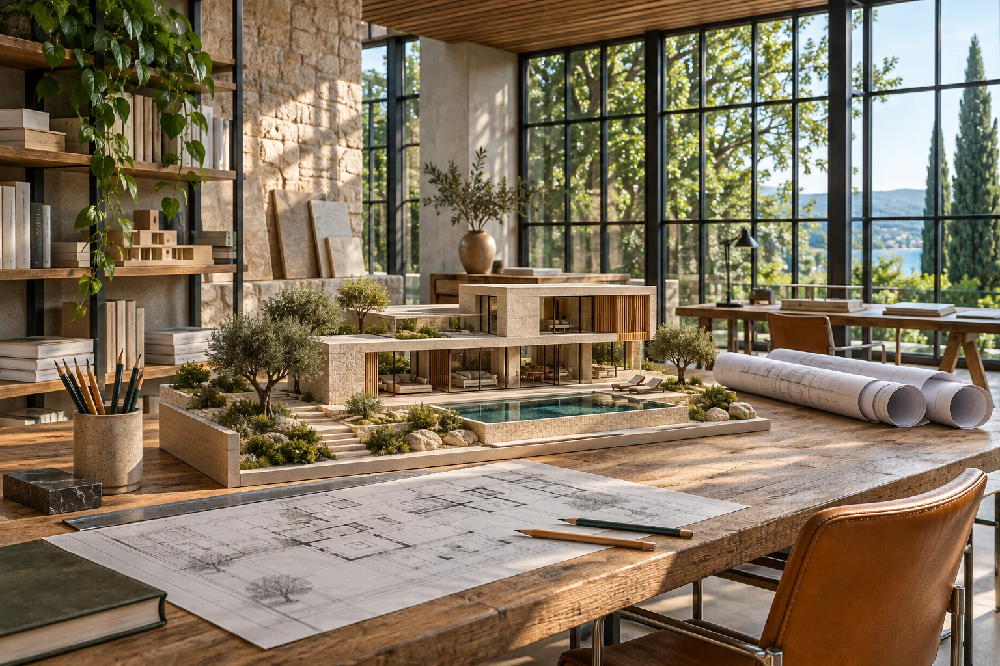
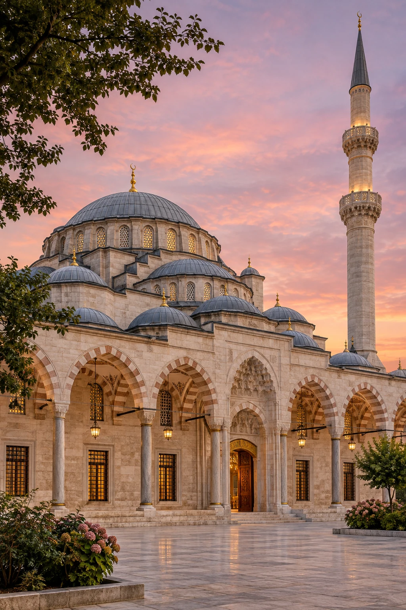
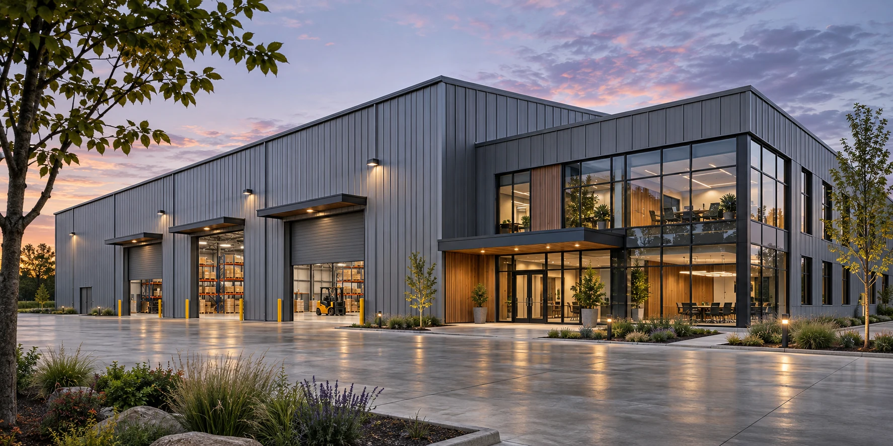
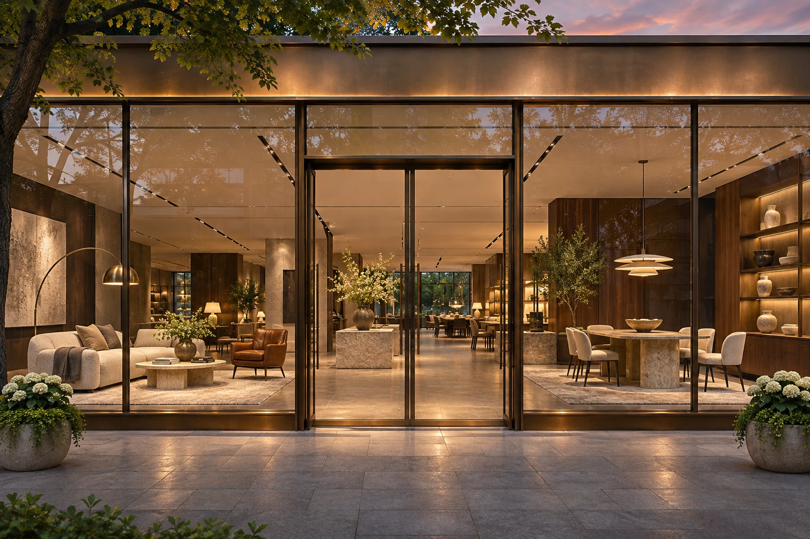
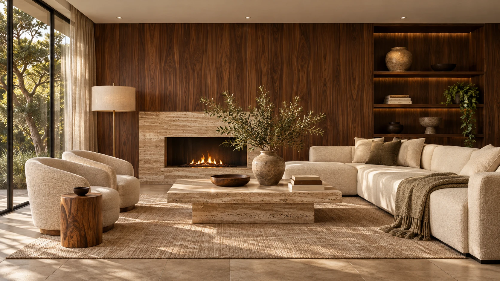
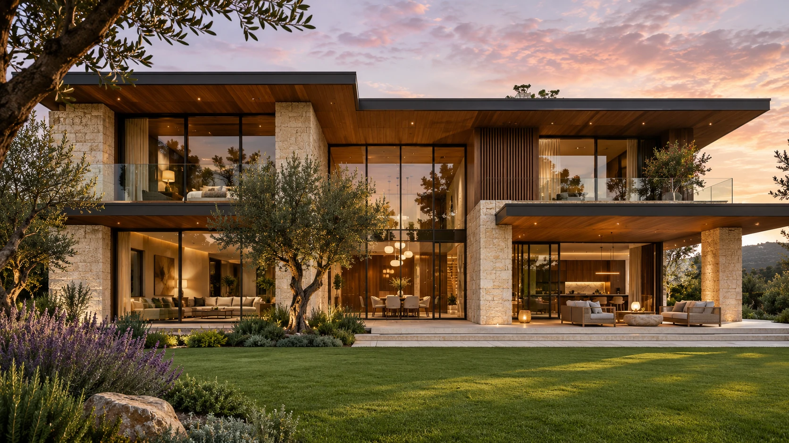
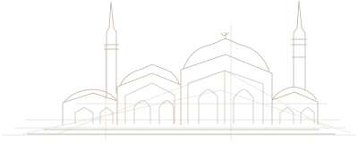

Temsili görsel
Cami Mimarlığı
İbadet mekânları, avlu ve giriş dizilimi, gün ışığı ve malzeme ilişkileri üzerinden ele alınır.
Çalışma alanlarına dönTasarım Demosu
Mimariden iç mekâna, tasarımdan uygulamaya.
Çalışma Alanlarımızı KeşfedinASKAY YAPI İNŞAAT
ASKAY Yapı İnşaat, mimari tasarım ve uygulama alanlarında; ibadethanelerden endüstriyel yapılara, showroomlardan konut ve iç mekân tasarımlarına uzanan bir çalışma alanına sahiptir.






Temsili görsel
İbadet mekânları, avlu ve giriş dizilimi, gün ışığı ve malzeme ilişkileri üzerinden ele alınır.
Çalışma alanlarına dönTemsili görsel
Üretim, lojistik ve çalışma alanlarının yerleşimi, yapının günlük işleyişiyle birlikte değerlendirilir.
Çalışma alanlarına dönTemsili görsel
Sergileme, aydınlatma ve ziyaretçi dolaşımı, ürün ve mekânın birlikte algılanmasını sağlayacak biçimde ele alınır.
Çalışma alanlarına dönTemsili görsel
Mekân kurgusu, doğal ışık ve malzeme seçimleri kullanım ihtiyaçlarına göre değerlendirilir.
Çalışma alanlarına dönTemsili görsel
Yaşam alanları, açık alan ilişkileri, mahremiyet ve gündelik kullanım alışkanlıklarıyla birlikte ele alınır.
Çalışma alanlarına dönİbadet mekânları, avlu düzeni ve doğal ışık ilişkisi mimari tasarımın bütünü içinde ele alınır.

TASARIMDAN UYGULAMAYA
İhtiyaçları ve mekânsal öncelikleri belirleyip tasarımın ana fikrini kurarız.
Konsepti plan, kesit ve görünüşlerle geliştiririz.
Malzeme, ışık ve kullanım kararlarını mekânın bütünü içinde ele alırız.
Çizim ve malzeme kararlarının sahaya aktarılacağı adımları planlarız.
Hizmet kapsamı firma onayına tabidir.
Projeniz hakkında görüşmek, çözüm önerilerimizi dinlemek ve süreç hakkında bilgi almak için bize ulaşın.
0342 325 56 80